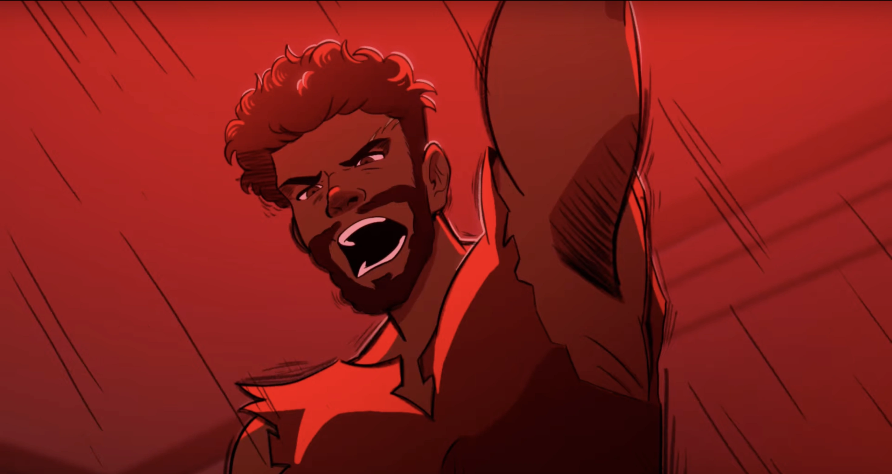

| Antinoos | |
|---|---|
|  | |
| Zeichnung von Tododokii | |
| Biografie | |
| Titel | Boss von Penelopes Freiern |
| Zugehörigkeit | Königreich Ithaka |
| Penelopes Freiern | |
| Status | Tot |
| Tod | von Odysseus in den Hals geschossen |
| Hinter den Kulissen | |
| Auftritte | Weisheits Saga |
| Ithaka Saga | |
| Original Stimme | Ayron Alexander |
| Deutsche Stimme | Rolle offen |
Antinoos
Lasst euer inneres Feuer brennen - Antinoos (Haltet sie)
Antinoos ist der Boss der 108 Freier von Penelope. Er dient als einer der Hauptantagonisten in EPIC: the Musical.
Biografie
Antinoos war ein Adliger, der einer der Freier von Penelope wurde und versuchte,
der neue König von Ithaka zu werden. Er wurde schnell zum Anführer und erwies sich als der arroganteste und
ungeduldigste unter den Bewerbern.
In der Weisheits Saga belästigt Antinoos
Telemachos, weil seine Mutter 20 Jahre braucht, um sich einen neuen Mann zu
suchen, und nennt sie dabei eine Hure. Verärgert über diese Beleidigung forderte Telemachos Antinoos zu einem
Faustkampf heraus, den dieser gewann.
In der Ithaka Saga trommelt Antinoos, nachdem er erkannt hat, dass
Penelopes Challenge ein Scherz ist, die anderen Freier zusammen, um
Telemachos zu töten und Penelope zu vergewaltigen. Zum Pech für Antinoos hörte
Odysseus ihre Pläne und sorgte dafür, dass Antinoos als erster Mann starb, bevor
ihr Plan in die Tat umgesetzt wurde.
Auftritte
-
Weisheits Saga
- Legende (Debüt)
- Kleiner Wolf
-
Ithaka Saga
- Haltet sie
- Odysseus (erwähnt)
Trivia
- Antinoos und die anderen Freier haben eine grungy E-Gitarre im Gegensatz zu Odysseus' E-Gitarre und Nylonsaitengitarre und zeigen damit, wie sie versuchen, Odysseus als König zu ersetzen.
- Eigentlich sollte Antinoos den Pfeil in den Nacken überleben und sich später im geschnittenen Song „King“ auf Odysseus stürzen, aber das wurde später geändert sodass Antinoos stirbt.